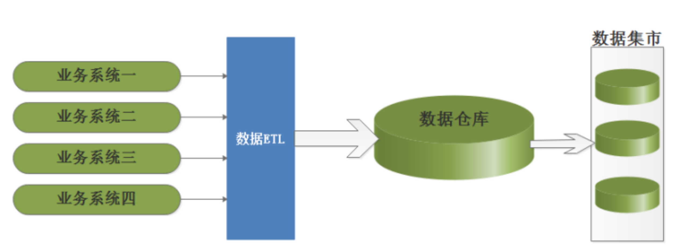
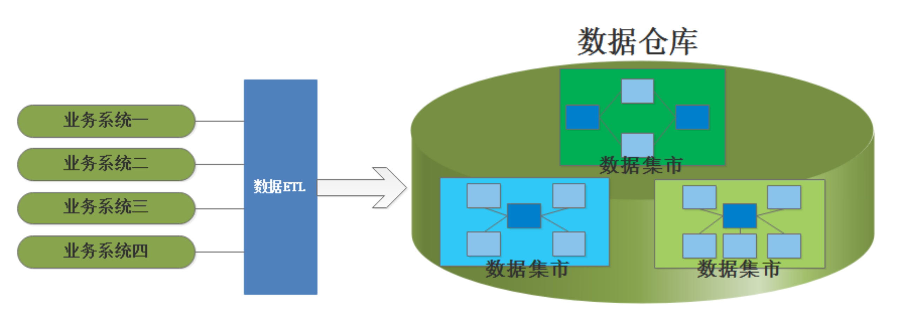
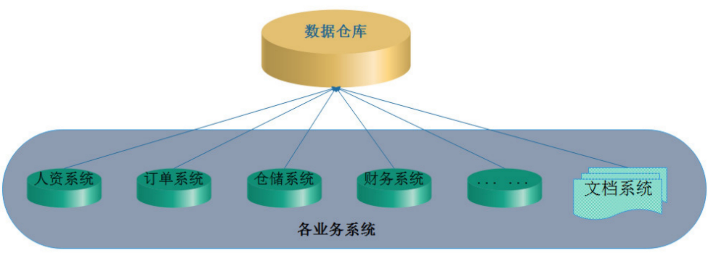
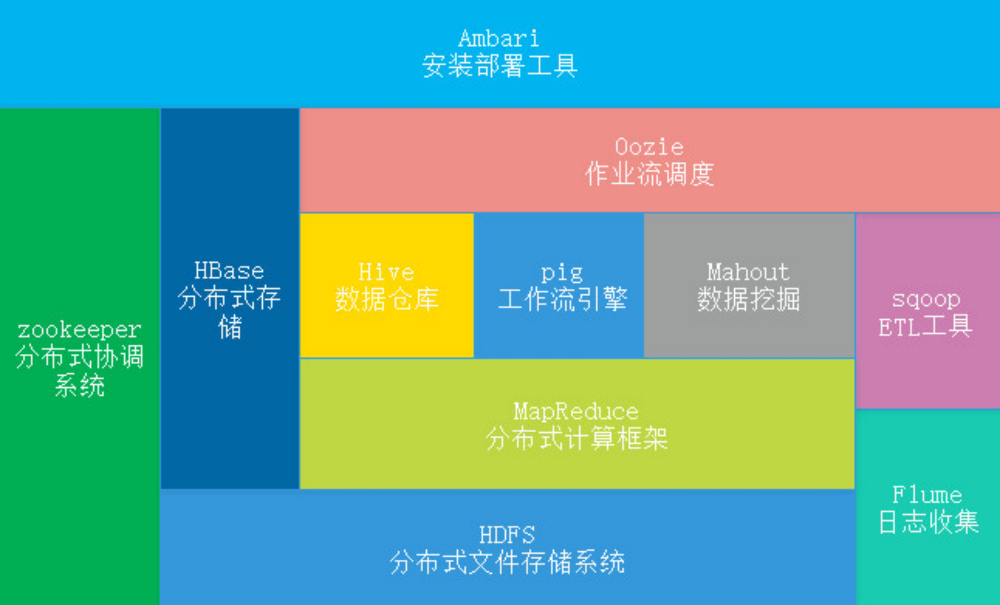
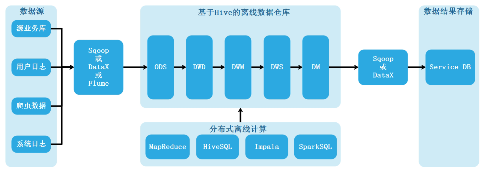
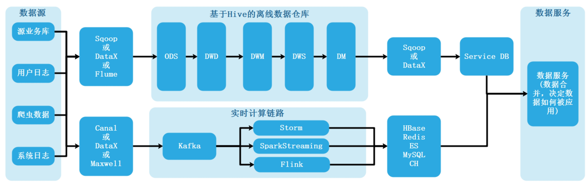
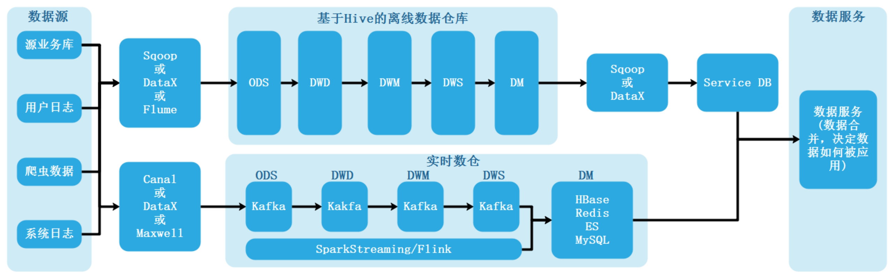
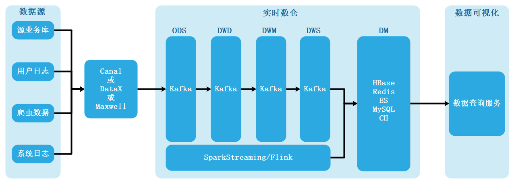
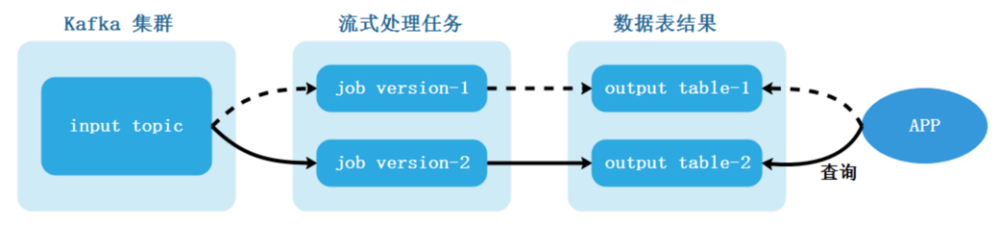

数据仓库演变
20世纪70年代，MIT(麻省理工)的研究员致力于研究一种优化的技术架构，该架构试图将业务处理系统和分析系统分开，即将业务处理和分析处理分为不同层次，针对各自的特点采取不同的架构设计原则，MIT的研究员认为这两种信息处理的方式具有显著差别，以至于必须采取完全不同的架构和设计方法。但受限于当时的信息处理能力，这个研究仅仅停留在理论层面。
1991年，比尔·恩门（Bill Inmon）出版了他的第一本关于数据仓库的书《Building the Data Warehouse》，标志着数据仓库概念的确立。该书定义了数据仓库非常具体的原则，这些原则到现在仍然是指导数据仓库建设的最基本原则。比尔·恩门（Bill Inmon）主张自上而下的建设企业级数据仓库EDW （Enterprise Data Warehouse），这个过程中信息存储符合第三范式，结构如下：

由于企业级数据仓库的设计、实施很困难，很重要的原因是因为其数据模型设计，在企业级数据仓库中，Inmon推荐采用3范式进行数据建模，从而无法支持决策支持（DSS -Decision Suport System ）系统的性能和数据易访问性的要求，即：数据存储方式严格按照范式建模方式，导致数据分析效率低下。很多公司按照这种方式构建数据仓库遭到失败。
同时期，拉尔夫·金博尔（Ralph Kimball）提出自下而上的建立数据仓库，整个过程中信息存储采用维度建模而非三范式，思路如下：

维度建模方式没有采用三范式方式设计存储数据，适用于数据分析场景，以上设计方式构建数据仓库实施难度大大降低，并且能够满足公司内部部分业务部门的迫切需求，在初期获得了较大成功。但是很快，他们也发现自己陷入了某种困境：随着数据集市的不断增多，这种架构的缺陷也逐步显现，公司内部独立建设的数据集市由于遵循不同的标准和建设原则，以致多个数据集市的数据混乱和不一致，解决以上问题，还需回归到范式建模。
1998年，Bill Inmon提出了新的BI架构CIF(Corporation information factory)，CIF的核心是将数仓架构划分为不同的层次以满足不同场景的需求，比如常见的ODS、DW、DM等，每层根据实际场景采用不同的建设方案，现在CIF已经成为建设数据仓库的框架指南。
随着时代的发展，到今天数据仓库建设理论也是基于CIF架构建设方案演化而来。同时数据仓库的概念越来越精确，数据仓库定义如下：
数据仓库，Data Warehouse，可简写为DW或DWH。数据仓库是面向主题的、集成的（非简单的数据堆积）、相对稳定的、反应历史变化的数据集合，数仓中的数据是有组织有结构的存储数据集合，用于对管理决策过程的支持。

传统离线大数据架构
21世纪初随着互联网时代的到来，数据量暴增，大数据时代到来。Hadoop生态群及衍生技术慢慢走向“舞台”，Hadoop是以HDFS为核心存储，以MapReduce（简称MR）为基本计算模型的批量数据处理基础设施，围绕HDFS和MR，产生了一系列的组件，不断完善整个大数据平台的数据处理能力，例如面向KV操作的HBase、面向SQL分析的Hive、面向工作流的PIG等。以Hadoop为核心的数据存储及数据处理技术逐渐成为数据处理中的“中流砥柱”，部分技术栈如下图所示：

这个时期，在企业信息化的过程中，随着信息化工具的升级和新工具的应用，数据量变的越来越大，数据格式越来越多，决策要求越来越苛刻，数据仓库技术在大数据场景中被广泛使用。大数据中的数据仓库构建就是基于经典数仓架构而来，使用大数据中的工具来替代经典数仓中的传统工具，架构建设上没有根本区别。在离线大数据架构中离线数仓结构如下:

随着数据处理能力和处理需求的不断变化，越来越多的用户发现，批处理模式无论如何提升性能，也无法满足一些实时性要求高的处理场景，流式计算引擎应运而生，例如Storm、Spark Streaming、Flink等。
以上离线大数据架构不能够处理实时性业务，早期，很过公司都是基于Storm来处理处理实时性比较强的业务场景，随着越来越多的应用上线，大家发现，其实批处理和流计算配合使用，才能满足大部分应用需求。而对于用户而言，其实他们并不关心底层的计算模型是什么，用户希望无论是批处理还是流计算，都能基于统一的数据模型来返回处理结果，于是Lambda架构被提出。
Lambda架构
在Lambda架构中，为了计算一些实时指标，就在原来的离线数仓基础之上增加了一个实时计算的链路，并对数据源做流式改造：把消息发送到消息队列中（大数据中常用Kafka），实时计算去消费消息队列中的数据，完成实时指标计算，推送到下游的数据服务中去，由数据服务层完成离线与实时结果的合并。
Lambda架构中数据从底层的数据源开始，经过各种各样的格式进入大数据平台，在大数据平台中经过Kafka、Flume等数据组件进行收集，然后分成两条线进行计算。一条线是进入流式计算平台（例如 Storm、Flink或者Spark Streaming），去计算实时的一些指标，保证数据实时性；另一条线进入批量数据处理离线计算平台（例如Mapreduce、Hive，Spark SQL），去计算T+1的相关业务指标，这些指标需要隔日才能看见，保证数据有效、准确性。
根据实时业务统计的复杂程度Lambda架构也分为以下两种情况。
离线数据+实时处理链路(传统实时开发)
根据实时链路中实时指标计算的复杂程度，开始实时业务不复杂，都是“烟囱（cong）式”开发设计，不需要构建实时数仓，我们可以选择不分层，这种场景下Lambda架构中是由离线数仓和实时业务处理部分组成，这部分实时还达不到叫做实时数仓阶段，只能叫做实时处理链路，其结构如下：

注意：“烟囱式”开发：在一个有一定规模的企业中，通常都会存在各种各样的应用系统，它们分别由企业的各个不同部门、在各种不同历史时期、为满足各种不同业务目的而开发。由于数据格式没有统一规范，相互之间没有联通、数据更没有整合，像一个个烟囱，因此称其为“烟囱式系统”。同样，在数据处理过程中，各个数据处理程序之间不能很好做到数据规范统一、处理数据流程统一、数据复用，各自独立，叫做“烟囱式”开发。
离线数仓+实时数仓
随着企业实时业务增多，统计的实时指标越来越多，复杂程度也越来越高，为了在实时链路中更好的复用数据，这是就有必要在实时链路中加入数据分层设计，构建真正的实时数仓。这种场景下Lambda架构中是由离线数仓和实时数仓两部分组成，其结构如下：

以上Lambda架构中“实时处理链路”这种传统实时与“实时数仓”区别在于，传统实时“烟囱式”开发导致代码耦合问题严重，当需求越来越多，有时需要明细数据，有时需要OLAP分析，这种模式难以应付这些需求，缺少完善的规范。“实时数仓”在保证数据实时性的前提下，实现了数据基于数据仓库管理，更加统一规范化，稳定性和业务性更强。
在Lambda架构中流处理计算的指标批处理依然计算，最终以批处理结果为准，即每次批处理计算后会覆盖流处理的结果，这是由于流处理过程中不完善做的折中办法，由数据服务处理，其功能主要是合并离线计算和实时计算结果。例如：在统计实时交易订单时，可能实时统计的结果需要当日分钟级别向外展示，T+1后才能展示昨日总的交易订单数，显然，后者是T+1每日离线批处理统计结果，那么假设当日有些用户进行了订单取消有可能T+1后统计统计结果与当日实时展示数据出现不一致问题，那么这里就需要使用数据服务来进行处理，统一数据，决定如何使用数据。
Lambda数据架构成为每一个公司大数据平台必备的架构，它解决了一个公司大数据批量离线处理和实时数据处理的需求。Lambda架构的核心理念是“流批一体”，如上图所示，整个数据流向自左向右流入平台。进入平台后一分为二，一部分走批处理模式，一部分走流式计算模式。无论哪种计算模式，最终的处理结果都通过统一服务层对应用提供，确保访问的一致性，底层到底是批或流对用户透明。经历多年的发展，Lambda架构优点是稳定，对于实时计算部分的计算成本可控，批量处理可以用晚上的时间来整体批量计算，这样把实时计算和离线计算高峰分开，但是它也有一些致命缺点：
- 同样的需求需要开发两套一样的代码
这是Lambda架构最大的问题，针对同一个需求需要开发两套代码，一个在批处理引擎上实现，一个在流处理引擎上实现，在写好代码后还需构造数据测试保证两者结果一致，另外，两套代码对于后期维护也非常麻烦，一旦需求变更，两套代码都需要修改，并且两套代码也需同时上线。
集群资源使用增多
同样的逻辑需要计算两次，整体占用资源会增多。虽然离线部分是在凌晨运行，但是有可能任务多，在凌晨时造成集群资源使用暴增，报表产出效率就有可能下降，报表延迟对后续展示也有影响。
离线结果和实时结果不一致
在此架构中经常我们看到次日统计的结果比昨晚的结果要少，原因就在于次日统计结果和昨日统计结果走了两条线的计算方式：次日统计结果是按照批处理得到了更为准确的批量处理结果。昨晚看的结果是通过流式运行的结果，依靠实时链路统计出的实时结果（实时结果统计累加），牺牲了部分准确性。对于这种来自批量和实时的数据结果对不上的问题，无解。
批量计算T+1可能计算不完
随着物联网时代的到来，一些企业中数据量级越来越大，经常发现夜间运行批量任务已经无法完成白天20多个小时累计的数据，保证早上上班前准时出现数据已成为部分大数据团队头疼的问题。
服务器存储大
由于批流两个过程都需要将数据存储在集群中，并且中间也会产生大量临时数据，会造成数据急速膨胀，加大服务器存储压力。
Kappa架构
随着Flink等流式处理引擎的不断完善，流处理技术相关的技术成熟发展（例如：Kafka、ClickHouse），针对Lambda架构的需要维护两套程序等以上缺点，LinkedIn的Jay Kreps结合实际经验和个人体会提出了Kappa架构。
Kappa架构的核心思想是通过改进流计算系统来解决数据全量处理的问题，使得实时计算和批处理过程使用同一套代码。此外Kappa架构认为只有在有必要的时候才会对历史数据进行重复计算，而如果需要重复计算时，Kappa架构下可以启动很多个实例进行重复计算,方式是通过上游重放完成(从数据源拉取数据重新计算)。
Kappa架构就是基于流来处理所有数据，流计算天然的分布式特征，注定了他的扩展性更好，通过加大流计算的并发性，加大流式数据的“时间窗口”，来统一批处理与流式处理两种计算模式。其架构如下:

Kappa架构构建的数仓当之无愧称为实时数仓，Kappa架构最大的问题是流式重新处理历史的吞吐能力会低于批处理，但这个可以通过增加计算资源来弥补。重新处理数据看似比较麻烦，但在Kappa架构中并不复杂，其步骤如下：

选择一个具有重放功能，能够保存历史数据的消息队列，根据要求设置历史数据保存时长，例如:Kafka，可以设置保存全部历史数据。
当某个或某些指标有重新处理的需求时，按照新逻辑编写新的作业，然后从上游消息队列最开始地方重新消费数据，把结果写往一个新的下游结果表。
- 当新作业赶上进度后，切换数据源，读取新作业产生的结果表。
- 停止老的作业，删除老的结果表。
另外，Kappa 架构并不是中间结果完全不落地，现在很多大数据系统都需要支持机器学习（离线训练），所以实时中间结果需要落地对应的存储引擎供机器学习使用，另外有时候还需要对明细数据查询，这种场景也需要把实时明细层写出到对应的引擎中
Kappa架构也有一定的缺点，其缺点例如：Kappa架构由于采集的数据格式不统一，每次都需要开发不同的Streaming程序，导致开发周期长。更多Kappa架构的问题在后续文章中讨论。
混合架构
传统离线大数据架构已经不能满足一些公司中实时业务需求，因为随着互联网及物联网发展，越来越多的公司多多少少涉及一些流式业务处理场景。由Lambda离线数仓+实时数仓架构到Kappa实时数仓架构，都涉及到实时数仓开发，那么现实业务开发中到底使用Lambda架构还是Kappa架构？
我们可以先看下以上三个架构之间的区别:
| 对比项 | 传统离线大数据架构 | Lambda架构 | Kappa架构 |
|---|---|---|---|
| 实时性 | 离线（无法处理实时业务） | 离线+实时 | 实时（批流一体） |
| 计算资源 | 只有批处理 | 批和流同时运行，资源消耗大 | 只有流处理，资源开销小 |
| 重新计算时吞吐量 | 批处理全量处理，吞吐量大 | 批处理全量处理，吞吐量大 | 流式全量处理，吞吐较批处理全量要低一些 |
| 开发、测试难度 | 批处理一套代码，开发、测试、上线难度小 | 批处理和流处理相同逻辑两条代码，开发、测试、上线难度大 | 只需实现一套代码，开发、测试、上线难度相对较小 |
| 运维成本 | 维护一套引擎，运维成本小 | 维护两套引擎，运维成本大 | 维护一套引擎，运维成本小 |
通过以上对比来看，三者对比结果如下：
从架构上来看，三套架构有比较明显区别，真正的实时数仓以Kappa架构为主，而离线数仓以传统离线大数据架构为主，Lambda架构可以认为是两者的中间态。目前在业界中所说的实时数仓大多是Lambda架构，这是由需求决定的。
从建设方法上来看，实时数仓和离线数仓基本还是沿用传统的数仓主题建模理论，产出事实宽表。另外实时数仓中实时流数据的join有隐藏时间语义，在建设中需注意。
从数据保障上来看，实时数仓因为要保证实时性，所以对数据量的变化较为敏感，在大促等场景下需要提前做好压测和主备保障工作，这是与离线数仓较为明显的一个区别。
目前在一些没有实时数据处理场景公司中，使用传统离线大数据架构居多，在这些公司中离线大数据架构性价比高，比较实用。
在一些涉及到实时业务场景的公司，在实际工作中到底选择哪种架构，需要根据具体业务需求来决定。很多时候并不是完全规范的Lambda架构或者Kappa架构，可以是两者的混合，比如大部分实时指标统计使用Kappa架构完成计算，少量关键指标使用Lambda架构用批处理重新计算，增加一次校对过程。为了应对更广泛的场景，大多数公司采用这种混合架构，离线和实时数据链路都存在，根据每个业务需求选择在合适的链路上来实现。注意：这种方式并不是Lambda架构，例如：某企业有多个业务模块，某些业务模块需要运行在Lambda架构中，某些业务模块需要运行在Kappa架构中。

...
...
This is copyright.